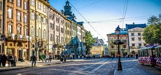

Історія Львова настільки ж яскрава та дивовижна, як і саме місто, насичена цікавими подіями та знаменитими постатями. Сьогодні Львову вже понад 760 років і йому є Вам про що розповісти. Місто, яке було засноване на перетині вигідних торгівельних шляхів скоро розцвітало та розвивалося, ставши одним із головних торгових центрів середньовічної Європи. Згодом, переходячи під влади багатьох європейських країн, зокрема Польщі, Австрії, Німеччини та Росії, Львів перебирав від кожного зі своїх загарбників якусь частину культури та знань, з часом перетворившись не лише на перлину архітектури, але й столицю сучасного наукового, духовного та мистецького життя.
на головну